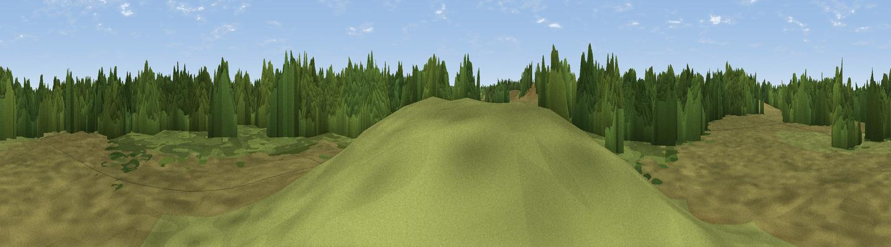

Horsebush Hill
#45815 in England · top 94% of its area beats it · near HollywaterWhere it is
The exact computed spot (SU 80421 32912). Click the marker for map links.
The view, rendered

A 360° render of this exact spot computed from the terrain model, tree cover and land cover — summer colours, afternoon light, calibrated against photographs of famous viewpoints. Real trees, hedges and buildings will differ in detail.
The panorama
Grey silhouette: terrain skyline in each direction (720 bearings, Earth curvature and refraction included). Dashed green: skyline with trees (+15 m) and buildings (+8 m) as obstacles. Blue strip: how far the ground is visible on each bearing.
Where the view opens
Wedge length = distance to the farthest visible ground on that bearing (vegetation-aware). Rings at 10, 25 and 50 km.
What fills the view
55% woodland · 44% grassland ·
Angular shares of the visible panorama (visual magnitude), not map area. Landscape diversity 0.32 (0–1 Shannon).
Key numbers
More beautiful places nearby
The staircase of upgrades: each row has a higher view potential than everything closer. Driving times are estimates from straight-line distance, calibrated against real road routing — check an actual route before setting out.
| Place | Direction | Drive | Score |
|---|---|---|---|
| Viewpoint near Liphook | SE · 2 km | ~6 min | 26.2 |
| Viewpoint near Empshott | WSW · 4 km | ~9 min | 46.8 |
| Viewpoint near Milland | SE · 5 km | ~12 min | 48.2 |
| Viewpoint near Oakhanger | WNW · 6 km | ~12 min | 49.7 |
| Noar Hill | W · 6 km | ~12 min | 59.8 |
| Viewpoint near Lynchmere | SE · 7 km | ~14 min | 62.2 |
| Viewpoint near Steep | SW · 8 km | ~17 min | 68.7 |
| Viewpoint near Fernhurst | ESE · 12 km | ~23 min | 75.1 |
51.08990, -0.85308 · source: osm peak · position refined by local search. Computed location — check access rights before visiting.